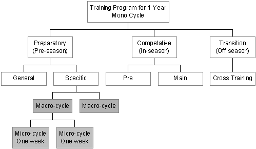

|
Periodization of Judo Athletes
By: Tom Gallant, M. Ed., 4th Dan NCCP: Master Course Conductor for Judo IntroductionEver since sport began, athletes and coaches have been trying to get the most from their training. All athletes, including judo players (judoka) want to get their best performance in the shortest time possible and at the right time. In other words they want their best performance at the highest level of competition they will compete in for that year. To achieve these results, athletes and coaches have to modify their training programs in such a way as to peak athletes at the appropriate time in their program so they will evoke an optimal performance. The method of attaining these performance-enhancing results is achieved through periodization, or dividing an athletic training program into phases.
RationaleThis paper was written to fulfill the needs, as I see them, regarding the training and planning of athletes that will represent the province in national competition, e.g. Canada Winter Games. The coach responsible for the training of athletes is the Level two certified coach, who must be able to take the plans set out by the provincial coach, interpret them and put them into practice. Because the athletes are spread across the province, this is a necessity. As a result, the Level two coach must be able to read, interpret and follow a yearly plan for his/her athletes. This paper was written to fill the gap between what is presently taught as part of the Level two programs and what is taught at level three. For the most part, the material contained in this paper does not duplicate what is taught in Level three, but tries to bridge the gap between the two levels.
MethodologyThere are many models of yearly planning that are in use in the sport community. The most widely used model for periodizing or planning athletic training is the Bompa model. Bompa's model is best described in the book: Bompa, T. (1994). Theory and Methodology of Training: The key to athletic performance, 3rd Edition, Iowa: Kendall/Hunt Publishing Company., and Bompa, T. (1993). Periodization of Strength: The new wave in strength training, Don Mills, Ontario: Veritas Publishing Company. The Bompa Model is the one the author has chosen to use for this article.
TrainingTraining can be defined as "an exercise program to develop an athlete for a particular event. Increasing skill of performance and energy capabilities are of equal consideration" (Bompa, 1994, p. 159). To achieve the desired effect from training, the athlete must take into consideration certain stimuli such as physiological, psychological, biochemical (nutrition), social, and technical. All this information comes from the athlete, and the results obtained can only be as good as the information obtained. Consequently, the coach, who will build the training process, may not be in the best position to evaluate the training effects of the plan.
PeriodizationBompa (1994) defined periodization as "a process of structuring training into [periods and] phases," p. 375. In order to show the breakdown of the components of training, the coach must first understand how these periods and phases reflect the life cycle of an athlete (See Figure 1). The author has estimated that the average competitive life cycle of an athlete between 12 and 16 competitive years. This life cycle is further sub-divided into quadrennials, or four-year plans, which coincide with the time-span between Olympic games. Each quadrennial is sub-divided into yearly plans or periods called yearly planning instruments (YPI's). The process of building a period of training is called periodization.
Figure 1 - Athlete Life CyclePeriods and CyclesA period consists of a three phases working together in a block or group. Periods include a preparatory phase, a competitive phase, and a transition phase. When these three phases occur once within a 12-month time span, we have a monocycle. If a period occurs twice in a 12-month time span, this is referred to as a bicycle. When a period occurs three times within a 12-month time span, this is referred to as a tricycle. If a period repeats itself more than three times, we have a multi-cycle (See Figure 2).
Figure 2 - Cycles of TrainingThe easiest way for a coach to choose the best cycle to use (a monocycle, a bicycle, a tricycle or a multi-cycle) is to count the number of main competitions in the year. If the athlete will attend only one major competition in a 12-month period, then use a monocycle. If there are two main competitions in a 12-month span, then use a bicycle, E.g. a main competition in November, such as the Ontario Open Championships and one in May, such as the Senior Nationals. It will be extremely rare for any developing athlete to use a tricycle or a multi-cycle in their training plan. Most high performance coaches do not use these.
PhasesEach period has three phases of training: the preparatory phase, the competitive phase and the transition phase (See Figure 3). The three phases are further subdivided into sub phases.Note. The planning instrument used to chart a yearly plan is the YPI (Yearly Planning Instrument).
Figure 3 - Phase Breakdown
Putting the Period into practicePerformance FactorsWhen you plan to train your athlete, what you are in effect trying to do is take all the components of training, called performance factors, and systematically brings them to a point where the athlete is "peaked" for the competition. These performance factors are divided into:
Each performance factor is broken down into various components, e.g.:
What to doTake all the various performance factors and their components and apply the general guidelines set out in the three phases and sub-phases below.
General Preparatory Phase (See Figure 3, A)The training needed at this stage include the following:
Note: use lots of reps. Train aerobically.Specific Preparatory Phase (See Figure 3, B)The training needed at this stage include the following:
Pre-competitive Phase (See Figure 3, C)The training needed at this stage include the following:
Competitive Phase (See Figure 3, D)The training needed at this stage include the following:
Competitive Sub-phasesThis phase is divided into three sub phases:
1. Unloading (tapering)
Figure 4 - Unloading Intensity Chart
2. Special Preparation Period (See Figure 3, F)This refers to specific training plans the coach may have just prior to an event. This is usually special psychological training the coach has made to aid the athlete prepare for the competition. This could include the following:
Competition (See Figure 3, G)This section deals with the activities on the days of the competition. These include but are not limited to:
Transition: Off -Season and Cross Training (See Figure 3, H)This phase in the YPI is considered a time away from judo, but not away from total training. It is sometimes referred to as cross training. This training phase is marked by the following characteristics:
Macrocycles and MicrocyclesMacrocycles and microcycles are commonly used when training phases are broken down into smaller planning units (See Figure 5, below).
Figure 5 - Sub divisions of Training
MacrocyclesMacrocycles are used to organize large training units or training objectives. Macrocycles breakdown sub-phases such as general preparatory, specific preparatory, pre-competitive, and main competitive into manageable training units.The duration of a macrocycle depends on the phase and sub-phase it is part of and the training goals the coach has set for it. E.g. in the preparatory phase, macrocycles can last between four (4) and Six (6) weeks or four (4) to six (6) micro cycles (Bompa, 1994, p.159). In the competitive phase macrocycles can be as short as, two (2) weeks or as long as four (4) weeks. Some examples of macrocycles are:
MicrocyclesMicrocycles are short training periods designed to maximize the benefits of each workout. Microcycles are weekly training programs. They are subdivisions of macrocycles. E.g. If a macrocycle is of a six (6) week duration, then there are six (6) microcycles in the macrocycle.At the microcycle stage, the coach should carefully monitor the athlete for signs of fatigue, and should adjust the volume and intensity of each workout accordingly (See Figure 6, below).
Figure 6 - The Volume and Intensity of a MicrocycleEach microcycle is sub-divided into training sessions or training days. These training sessions have to be planned with the microcycle or week in mind.
MesocycleA mesocycle is a relatively new term used by some authors to represent a planning unit that falls between the macrocycle and the microcycle. When the mesocycle is used with planning, the macrocycle takes on a different meaning than what we are using in this paper. The Bompa method of planning does not use this term, and it appears to be going out of fashion.
ReferencesBompa, T. (1994). Theory and Methodology of Training: The key to athletic performance, 3rd Edition, Iowa: Kendall/Hunt Publishing Company.Bompa, T. (1993). Periodization of Strength: The new wave in strength training, Don Mills, Ontario: Veritas Publishing Company.
The AuthorMr. Tom Gallant, B.A., B.Ed. M.Ed., 4th Dan (Judo), MCC (Judo)Mr. Tom Gallant is a 4th Dan Black Belt in Judo. He has been coaching for 28 years, and has brought over 20 of his students to Black Belt. He has coached athletes who have won medals at every level of competition in Canada. He is a Master Course Conductor (MCC) for the sport of judo, and a Course Conductor (CC) in teaching coaching theory. He has been teaching coaching education for over 10 years. Mr. Gallant has a Masters Degree in Education with a concentration in Communications, Technology and Evaluation. He as evaluated the 3M NCCP Level 2 Technical Course for Judo, nationally. He has further developed the judo curriculum for the NF & Lab Judo Association. Mr. Gallant was part of the committee that developed the Black Belt curriculum for Judo Canada.
| Home
| Philosophy
| Instructors
| Honor Roll
| Events
| Contact us
|
| Schedule | Rank structure | NF Black Belts | NF Referees | NF Coaches | | Affiliations | Coaching Staff | Links | Guestbook | Webmaster | Page Stats | 2000 © Ron Gallant
|